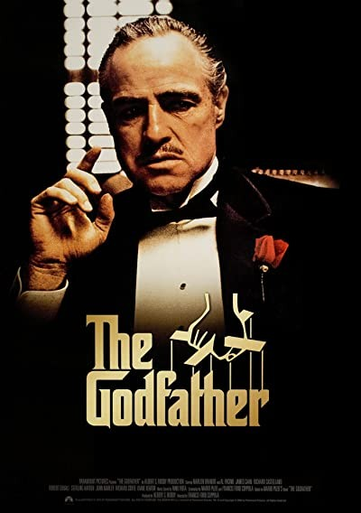
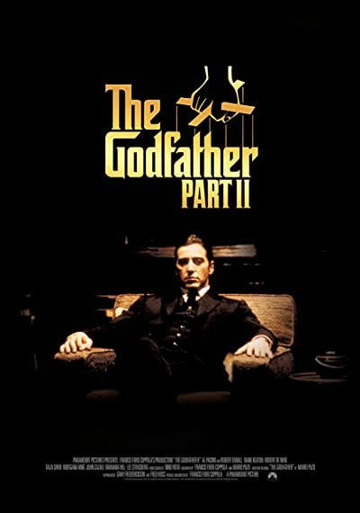
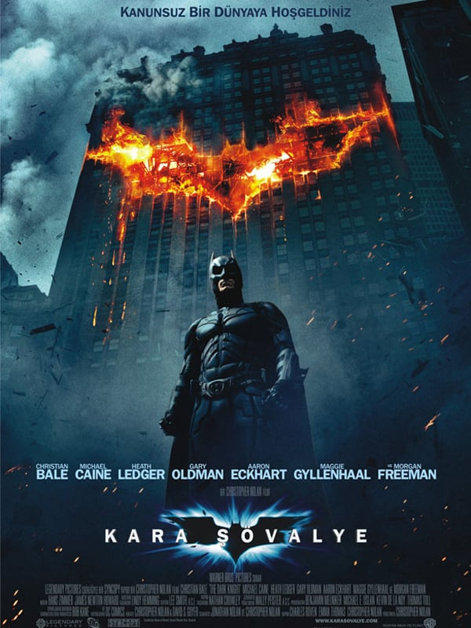
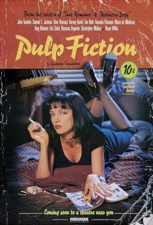
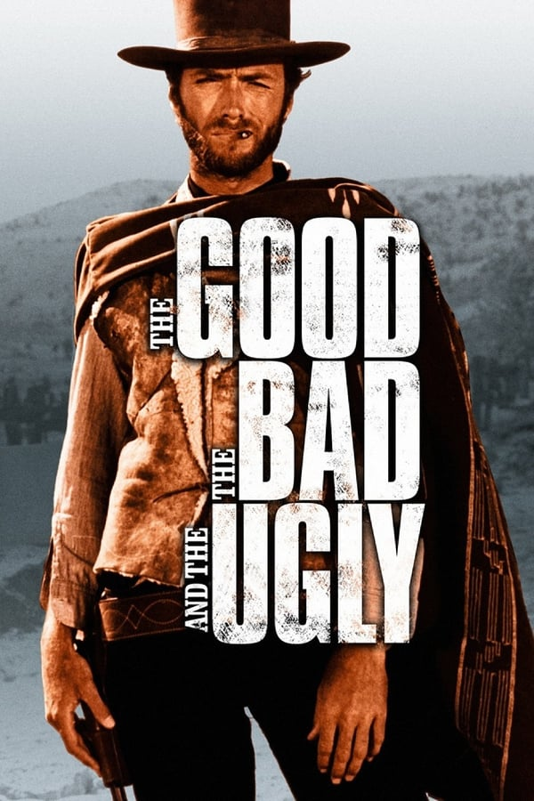
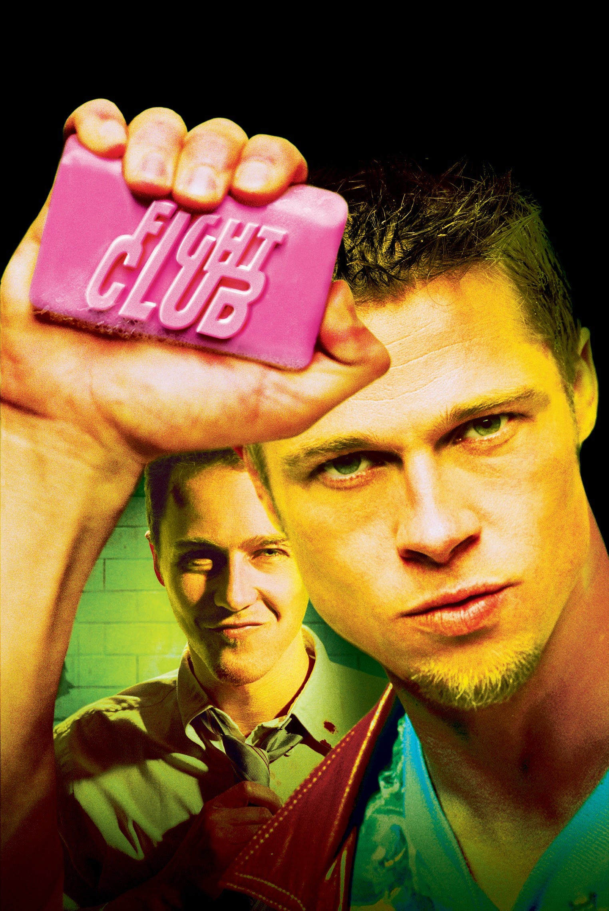

- Esaretin Bedeli (1994)
- Baba (1972)
- Baba 2 (1974)
- Kara Şövalye (2008)
- 12 Öfkeli Adam (1957)
- Schindler'in Listesi (1993)
- Ucuz Roman (1994)
- Yüzüklerin Efendisi: Kralın Dönüşü (2003)
- İyi, Kötü ve Çirkin (1966)
- Dövüş Kulübü (1999)
IMDB TOP 10
ESARETİN BEDELİ FİLM İNCELEMESİ (9,2)

Belki de gelmiş geçmiş en iyi filmlerden biri ‘Esaretin Bedeli (Shawshank Redemption).’ 7 dalda Oscar’a
aday gösterilmiş, defalarca seyredebileceğiniz ve farklı mesajlar alabileceğiniz bir film.
Sadece erkeklerin rol aldığı ve bir hapishane geçen bir filmin (Esaretin Bedeli) beni bu kadar
etkileyeceğini düşünmezdim hiçbir zaman. Sanırım filmin en çarpıcı yönü kendimizi de dönem dönem
hapsedilmiş veya kısıtlanmış hissetmemizle kurduğu ilişki. Üç kere Oscar’a aday gösterilmiş Frank
Darabont’un filme kattığı müthiş atmosfer, müzikler ve akıcılık seyri mükemmel hale getiriyor elbette.
Yeşil Yol (The Green Mile) ve Majestik gibi muhteşem filmlere imza atmış Frank Darabont, Stephen King’in
kısa hiyakesini beyaz perdeye aktarmış.
Gelelim filmin hikayesine:
Andy (Tim Robbins) kendisini aldatan eşini ve eşinin sevgilisini öldürmek suçu ile müebbet hapse mahkum
olmuştur. Bankacı olan Andy bu cinayetleri işlemediğine emindir. Shawshank hapishanesinde genç yaşta suç
işleyen ve pişmanlık yaşayan Red (Morgan Freeman) ile tanışır.
Red, Andy’i tanıdıktan sonra der ki: “Sanki parkta gezinti yapan, üzerinde görünmez bir kalkan olan
biri…”
Tüm haksızlıklara ve zor şartlara rağmen kendini bunların dışında tutabilen biridir Andy… İlk iki senesi
kabus gibi sıkıntılarla geçer ama Andy tüm bunlarla mücadele eder, kavga eder, dayak yer ama yıkılmaz.
Ta ki bir gün hapishanenin en zorlu gardiyanlarından birinin vergi borçlarına yardım etmeyi teklif eder;
gardiyan onu binadan aşağı atacakken, gardiyanı ikna eder ve karşılığında arkadaşları için kişi başına
üç bira ister. Kendisi bira içmez, yüzünde sadece bir gülümseme vardır. Andy kendini özgür ve normal
hissetmiştir.
Andy kendini iyi hissetmek için sevdiği arkadaşlarına bir şeyler vermeye çalıştı.
Andy gardiyanı ikna ederken önce gardiyanı şaşırttı ve ona “ne kazanacağını” başta söyledikten sonra ona
nasıl olacağını anlattı.
Andy daha sonra yayılan şöhreti nedeniyle kütüphaneye gönderilir. Buranın durumu iş açıcı olmadığından,
dışarıdan yardım için hafta bir mektup yollamaya başlar, hiç cevap gelmez ama Andy mektuplara devam
eder. Tam altı yıl sonra kutular dolusu kitap ve bir miktar maddi destek gelir ve mektupların kesilmesi
istenir.
Andy, haftada 2 mektup yazmaya başlar. Ta ki, eyaletin en iyi kütüphanesini kurmaya yetecek kadar yardım
toplayana kadar.
Andy hedeflerinin ve hayallerinin peşinden kararlı bir şekilde koşmaya devam eder ve elde edilen
başarılardan sonra yeni hedefler koyarak ilerlemeye devam eder.
Filmin diğer bir karakteri ise hayatının elli senesi hapishanede geçiren Brooks. Ceza süresi bitince
kendine öldürmeye kalkar. Çünkü hapishane hayatına çok alışmış ve benimsemiştir ve hiç bilmediği özgür
hayattan korkmaktadır.
Brooks hiç bir şekilde kendini geliştirmeden, mevcut ortam ve koşullara uyum sağladığı için bu hayatın
dışına çıkamamıştır, başka bir alternatif hayal etmemiş ve mevcut koşulları saklamaya çalışmıştır.
Red, Andy’nin gözündeki ışığı görüp onun için endişelenmeye başlar ve der ki “Umut çok tehlikelidir…
insanı çılgınlığa götürebilir.”
Andy aksine umudunu hiç kaybetmemiştir. Umut ve hayallerimiz bizi ayakta tutar ve hayatımıza anlar
katar. Hayallerimiz için elle tutulur çalışmaları yapar ve sabırlı olursa hayallerinin gerçekleşeceğine
inanır ve bunu tam yirmi sene sonra başarır.
Bu filmi seyretmenizi öneriyorum. Kendinizi hazırlayın, sabır ve çabanın neler yaptırdığını görün.
Fragmana aşağıdan ulaşabilirsiniz...
BABA FİLM İNCELEMESİ (9,2)
Baba, Amerika'nın rüşvet, aldatma ve ihanetlerle dolu savaş sonrası döneminde hayatta kalmaya çalışan
Sicilyalı bir ailenin, şiddet dolu ve soğukkanlı portresini ustalıkla çiziyor.
Mario Puzo'nun yazdığı aynı adlı romandan uyarlanan film, profesyonel bir gangster üyesi olmanın pek de
istenilen bir şey olmadığını gösterir. Sık sık, kısa ve korkunç şiddet olayları içerisinde ve sonrasında
oluşan bakışlar bu mesleğin bir bedelidir. Film, bu geleneksel göçmen mafya resminin gösterişli
görünümünü bize bir kenarda canlı kalanlar tarafından sunmaya çalışır.
Mario Puzo'nun romanı hakkında dikkat çeken ilk şey, içeriden birinin kaleme almış olduğu izlenimi
yaratmasıdır. Bize geniş, suç ve entrikalarla dolu bir dünya yerine daha küçük, kısıtlı ve özel bir grup
hakkında detay veriyormuş gibi hissettirir. Herkes herkesi tanıyor ve ne yaptıklarını çok iyi biliyor.
Bir itirafçının not defteri gibi.
Baba, 40'lar ve 50'lerin Amerika'sında, bir İtalyan mafya ailesinin destansı öyküsünü konu alır. Don
Carleone'nin kızı Connie'nin düğününde, ailenin en küçük oğlu ve bir savaş gazisi olan Michael babasıyla
uzun sürenin ardından barışır. Bir suikast girişimi, Don'u artık işleri yürütemeyecek duruma düşürünce
ailenin başına Michael ve ağabeyi Sonny geçer.
Francis F. Coppola'nın filmi, tek boyutlu ayak takımı serseriler yerine daha karmaşık ve varoluşsal
ikilemlerle boğuşan gangster tasviriyle gangster film türünü tamamen değiştirdi. Öncesinde buna benzer
tüm gangster filmleri, dışarıdan bir bakış açısıyla anlatılıyor ve gangsterler nadiren sevecenlikle
tasvir ediliyordu.
Baba, aynı zamanda bir mafya örgütünü içeriden gösteren ilk filmdir. Carleone ailesinin ve çektikleri
sancıların dallanıp budaklanan tasviri, karakterlerin temel saiklerinin suç işlemek değil şeref, vazife
ve aileye bağlılık olduğu eski Yunan trajedilerinin ihtişamına ve kapsamına erişir.
Fragmana aşağıdan ulaşabilirsiniz...
BABA 2 FİLM İNCELEMESİ (9,0)
“Baba II” sinema eleştirmenleri tarafından, önceki filmden daha başarılı bulunan az sayıdaki devam
filminden biridir. Bu durum Oscar heykelciklerine de yansımıştır. “Baba II”, Oscar alan ilk devam filmi
unvanıyla birlikte “En İyi Film”, “En İyi Yardımcı Erkek Oyuncu”, “En İyi Yönetmen”, “En İyi Uyarlama
Senaryo”, “En İyi Sanat Yönetmenliği” ve “En İyi Film Müziği” olmak üzere altı dalda Oscar almıştır.
Marlon Brando ve Robert De Niro ise Oscar tarihinde aynı karakteri oynayarak farklı ödüllere layık
görülmüş tek isim olma özelliğine sahipler. Sonny rolü için görüşmelere gelen Robert De Niro, Coppola’yı
adeta büyülemiştir. Bu yüzden ünlü yönetmen De Niro’nun Vito Corleone’nin gençliğini oynamasını
istemiştir. De Niro da seve seve kabul edip bir dişçiye giderek Brando’nun buldok aparatının bir
benzerini yaptırmıştır. Robert De Niro bu filmde sadece 45 dakika Vito Corleone’nin gençliğini
canlandırarak Oscar kazanmıştır.
Coppola bu seriye başlarken şiddeti ve mafya kültürünü legal gösterip insanların gözünde yücelteceği ve
kendi Sicilyalı geçmişini zayıf göstereceği gibi olumsuz düşüncelere sahiptir ve filmi çekmek istemez.
Ancak daha sonra filmi Amerikan kapitalizminin vahşiliğini ortaya koyacak simgelerle donatarak
izleyiciye sunmaya karar verir ve seriye başlar. Böylece elli yıldır benzeri yapılamamış, sinema
tarihinin en beğenilen üçlemesiyle insanların kalbine imzasını atar.
Fragmana aşağıdan ulaşabilirsiniz...
KARA ŞÖVALYE (2008) FİLM İNCELEMESİ (8,9)
Kara Şövalye'de Batman'in girişini müjdeleyen ilk çekim, yönetmen Christopher Nolan'ın süperkahraman
türüne getirdiği orijinal dengeyi özetliyor. Sahte Batman'lerin engellediği bir uyuşturucu satışı (O
uyuşturucuyu kimin sattığını Batman hayranları kolayca tahmin edebilir) sırasında gerçek Batman, kötü
adamlardan birinin silahını tutar ve silahın ucunu bozar. 30'lu yılların eski Superman çizgi
serilerinden beri türün baştacı olmuş, on yıllardır parodisi yapılmış bir klişe. Fakat ikinci izleyişte
gözüme çarpan bir detay çekimi, Batman'in avucunda sert objeleri kırmasını kolaylaştıran gizli bir metal
mekanizmayı gösteriyor.
Nolan'ın Batman'i işte bu iki yaklaşımın mükemmel bir buluşması. Her süperkahraman hikayesinin yaptığı
gibi iyi ve kötü arasındaki bitmez tükenmez savaşı mitolojik boyutlarda incelerken aynı zamanda
karanlık, sert ve gerçekçi bir dünya yaratıyor. Bu bakımdan Kara Şövalye, belki de gelmiş geçmiş en
başarılı süperkahraman uyarlaması olmanın yanında, yılın en iyi filmlerinden biri, türü her ne olursa
olsun...
Her ne kadar çoğunlukla çocuklara pazarlanan süperkahraman türüne ait olsa da, filmin 10-12 yaş altı
genç çocuklar için fazla vahşi, karanlık ve korkutucu olduğunu düşünüyorum. Filme gitmeden önce
ebeveynlerin çocuklarının yaşını ve bu tür korkutucu ve karanlık sahnelere olan alışganlığını göz önünde
tutmalarını tavsiye ederim.
Fragmana aşağıdan ulaşabilirsiniz...
12 ÖFKELİ ADAM (1957) FİLM İNCELEMESİ (8,9)

12 Öfkeli Adam, babasını kasten bıçaklayarak öldürmekle suçlanan 18 yaşındaki bir gencin dava sürecinde
mahkeme jürisinin karar alma aşamasını anlatıyor. Gencin ve iki tanığın ifadesi davada dikkate alınıyor.
Birbirini tanımayan ve herhangi bir ilişkileri olmayan 12 jüri üyesinin her birinin ortak kararı ile
dava sonuçlanacaktır. Karar sonucuna göre çocuk idam edilecek veya suçsuz bulunacaktır.
Kararlarımız salt bize mi özgü, yoksa çevremizdekilerin kararları bizi etkiliyor mu? Karar aşamasında
çevremizdekilerden nasıl etkileniyoruz? Ya da kararlarımızdan ne kadar emin oluyoruz ve bizden farklı
görüşte olanlara kulaklarımızı tıkıyoruz? Kişinin kendi doğruluğundan şüphe etmesi, mutlak doğruyu
bulmak üzere çıktığı yolda başkalarının fikirlerini önemsemesi bir kişinin hayatına mal olabilir mi? Bu
film tam da bu sorulara cevap niteliğinde bence. Film bir kişinin 11 kişiye karşı çıkıp onları kendi
bildiği doğruya ikna etme sürecini anlatıyor.
Filmde herkesin önünde yapılan oylamada normatif sosyal etkiyi görmemiz mümkün. Kişiler sosyal açıdan
kabul görmeme korkusu ile uyuma açıktı. Oy veren 11 kişinin tereddüt ederek oylarını verdiğini
görüyoruz. Oy veren asabi adam tartışmanın ilk dakikalarında ‘’tabii ki suçlu’’ diyerek kendisinden emin
ve otoriter bir duruşla kendi konumunu güçlendirir. Ve bu duruşu diğer kişilerin de normatif sosyal etki
ile asabi olan adama uyum sağlama eğilimine neden olur.
Özetle; filmin başlangıcında 11 jüri üyesi çocuğun suçlu olduğuna dair oy verirken, 1 kişi suçsuz
olduğunu düşünür. Ve bu doğrultuda kişilerin birbirlerini ikna etme süreci ele alınır. Filmin sonunda
gencin gerçekten suçu işleyip işlemediğini bilmiyoruz ama jüri üyeleri gergin ve hararetli bir tartışma
sonucunda gencin suçsuz olduğuna karar verirler. Malcolm X’in de dediği gibi ‘‘bütün uyuyanları
uyandırmaya bir tek uyanık yeter’’. Bu doğrultuda zaman zaman seçimler yaparken kendi inandığımızı mı
yoksa toplumun inançları doğrultusunda mı seçimler yaptığımızı sorgulamak ve farkındalık kazanmak
faydalı olacaktır diye düşünüyorum.
Fragmana aşağıdan ulaşabilirsiniz...
SCHINDLER'İN LİSTESİ (1993) FİLM İNCELEMESİ (8,9)

Schindler’s List, deyim yerindeyse beş kuruşu olmadan Almanya’ya gelen Oskar Schindler’in, kendi
deyişiyle sunum yeteneği sayesinde tanınan bir iş insanı olmasını anlatırken, bu yolculuğun merkezine
Yahudi Soykırımı’nı yerleştiriyor. Film klasik bir kariyer hikayesi anlatmıyor; aksine binlerce
Yahudi’nin hayatını kurtaran bir adamın gerçek yaşanmış hikayesine tanık ediyor. Bir diğer deyişle,
Schindler'in fabrikası, getto kamplarındaki Yahudilerin cennet kapısına dönüşüyor. Fabrikanın
müdürlüğünü üstlenen Itzhak Stern’ün yüzlerce Yahudi'yi Alman savaş gücü için gerekli göstermesi ile
başlayan yolculuk, para ile insan yaşamı arasındaki çizginin daha görünür kılındığı bir yolculuğa
evriliyor.
Öncelikle, Schindler’s List’in siyah beyaz bir film olduğunu belirtelim. Bu özellik, diğer pek çok siyah
beyaz film gibi dönemin sinema teknolojisinin yetersiz olmasıyla ilgili değil. Aksine bilerek ve
isteyerek yapılıyor. Yönetmen Spielberg film temasına uygun düşecek şekilde böyle bir yönteme
başvuruyor, açıkçası çok da iyi yapıyor. Dönemin karamsar atmosferine uygun olarak, seyir zevkini birkaç
kat arttırdığını vurgulamak gerek. Üstelik soykırım gibi “ağır” ve “ciddi” bir tema işleniyorsa renk
kullanımının daha net olması gerektiğini düşünüyoruz. Filmin siyah beyaz oluşu hem verilen mesajları hem
de karakterleri daha sağlam bir zemine oturtuyor. Ek olarak, filmin tek renkli sahnesi -sonda verilen
gerçek görüntüler dışında- Yahudi bir kız çocuğunun kırmızılı paltosu oluyor. Algılarımızın da
canlandığı bu sahne elbette zekice işlenmiş bir mesaj barındırıyor. Filmin devamında sadece üstündeki
kırmızı palto sayesinde tanınacak olan bu karakter, yönetmen Spielberg’in dediği üzere Birleşik
Devletler'deki üst düzey devlet adamlarının Holocaust esnasında olanları bilip bunu durdurmak için
hiçbir şey yapmamalarını belirtmeyi amaçlıyor.
Fragmana aşağıdan ulaşabilirsiniz...
UCUZ ROMAN (1994) FİLM İNCELEMESİ (8,9)

Filmde, Ringo ve Yolanda birbirine deli gibi aşık bir çifttir, hayatlarına heyecan katmak için yemek
yedikleri restoranı soymaya karar verirler. Bir mafya babası kendini dolandırmaya çalışan birkaç genci
öldürmek için Jules ve Vincent adında iki tetikçiyi görevlendirir. Marcellus, Butch adında bir boksörle
şike anlaşması yapar. Ancak Butch, final maçında yenilmeyi gururuna yediremez ve anlaşmaya ihanet eder.
Peşine mafya tetikçileri düşer. Bu tetikçilerden birinden (Vincent) patronunun karısına (Mia) bir gece
göz kulak olması istenir. Vincent Mia’yı gece gezmeye çıkarır ancak ona karşı cinsel bir çekime
kapılmamalıdır. Çünkü başka bir sahnede mafya babasının karısının ayaklarına masaj yaptığı için bir
adamı öldürdüğü vurgulanır.
Bu gibi tema ve izlekler daha önce defalarca kullanılmasına rağmen Ucuz Roman, B-tipi filmlerin sıklıkla
tekrar eden, bayatlamış anlatılarını yeniden inşa etmekten çekinmez. Böyle bir sinema geleneğinin bir
parodisini içinde barındırır. Postmodern anlatıda edebi metin, metinler arası göndermeler mozaiği içinde
oluşur. Tıpkı bunun gibi Ucuz Roman da kendinden önceki birçok filmden parçalar taşıyan bir kolaj
gibidir. Ancak buna karşın film, tekrara ve başka filmleri taklide asla yeltenmez. Bir bütün olarak
bakıldığında oldukça özgün ve yenilikçi bir filmdir.
Fragmana aşağıdan ulaşabilirsiniz...
YÜZÜKLERİN EFENDİSİ: KRALIN DÖNÜŞÜ (2003) FİLM İNCELEMESİ (8,9)

Yüzüklerin Efendisi: Kralın Dönüşü, Tek Yüzük'ün yok edilmesi için verilen mücadeleyi konu ediyor.
Sauron'un orduları büyüdükçe büyümektedirler. Frodo ve onun can dostu Sam, korku dolu bir yolculuğun
göbeğinde, korkunç Mordor'a adım adım yaklaşmaktadırlar. Tek yüzük yok edilmelidir ve iyilik bunun için
savaşmaya hazırdır. Arka planda ise insan, elf ve cüce orduları, karanlık güçlerin karşısında tüm eski
düşmanlıklarına rağmen bir araya gelmişlerdir. Hepsi birden küçücük bir Hobbit'in eline ve onun
yeteneklerine bakmaktadırlar. Orta Dünya'nın kaderi belli olmak üzeredir. Ancak Tek Yüzük'ü sahiplenmek,
kimi zaman taşıyanına daha cazip gelebilir.Matrix’in görevini tamamlayıp çekilmesinin ardından,
Yüzüklerin Efendisi de son halkasıyla huzurlarımıza çıkıyor ve üçlemeler döneminin en ilginç iki örneği
sinema tarihindeki yerini almaya hazırlanıyor. Bundan sonra hayatın daha sıkıcı olacağına hiç şüphe yok!
Fragmana aşağıdan ulaşabilirsiniz...
İYİ, KÖTÜ VE ÇİRKİN (1966) FİLM İNCELEMESİ (8,9)

Film, iç savaşın hüküm sürdüğü dönemin Amerikan topraklarında ahlak mefhumunu bir kenara bırakmış farklı
kimliklerdeki üç serserinin hikâyesini konu alır. Kendilerine Blondie, Tuco ve Angel Eyes denilen bu üç
silahşör, bir şekilde haberini aldığı yüklü miktardaki gömülü ganimetin peşine düşer. Birbirlerine
sürekli kazık atmakla meşgul olan Tuco ve Blondie (Evet Cüneyt Arkın’ın oynadığı “Üçkağıtçılar” filmi
aklınıza geldiyse o da esin kaynağını bu filmden almıştır. Hala hatırlamayanlar Bknz: Piç Rıza)
çevirdikleri düzenbazlıkların bir yerde sonuna gelmiştir.
Tuco, Blondie’yi öldürme arifesindeyken bir piyango ile karşılaşırlar. Başkaları tarafından elde edilmiş
bir ganimet mezarlıktaki bir mezarın içine gömülmüştür. Mezarlığın adını Ugly dediğimiz Tuco, mezarın
adını da ölmek üzere olan birisinden şans eseri Good yani Eastwood’un canlandırdığı Blondie öğrenir. Bu
durumda ister istemez Blondie ile Tuco tekrar işbirliği yapmak durumunda kalacaktır. Bu esnada orduda
kirlenmiş bir asker olarak görev yapan eski kiralık katil Angel Eyes da ganimeti öğrenir ve çetesi ile
birlikte el koymak için harekete geçer.
Hikâye anlamında harikalar yaratmayı vaat etmeyen yapımın asıl vurucu silahı olayları işleyiş şeklidir.
Film içerisindeki birçok sekans hala daha referans olarak kullanılmaktadır. Bunlardan birkaçını
sıralamak gerekirse filmin adına karşın hikâyede gerçekten bir iyi bulunmamaktadır. Angel Eyes (Kötü)
para için her şeyi yapabilecek, ahlak kavramından tamamen yoksun, zeki ve acımasız birini, Tuco (Çirkin)
yine para için hemen her şeyi yapabilecek, genelde şansı yaver gitmeyen biraz daha saf ve içinde bir
yerde ufak bir parça iyilik olan birini anlatır.
Fragmana aşağıdan ulaşabilirsiniz...
DÖVÜŞ KULÜBÜ (1999) FİLM İNCELEMESİ (8,8)

Bu film, tüketiciliğin ve tüketiciliğin insan üzerinde etkisini eleştiriyor. Tüketici topluma sinema
yoluyla yaklaşım sağlayan bu filmin hikayesi, tüketici odaklı hayal kırıklığına uğramış ve depresif bir
kahramanı toplumsal normlara karşı gelmeye ve mutluluk için farklı yol aramaya teşvik eden kahramanı
anlatıyor. Dövüş kulübü, toplumsal beklentileri ve normların kabul edilmemesi gerektiğini savunur. İş,
maddiyat, ev ya da arabayla başarının ilişkilendirilmemesi gerektiğini düşünen bu film, bireyleri
sorgulamaya ve kendi yollarını aramaya teşvik eder.
Toplumda kabul edilebilir olmak için takılan maskelerin çıkartılmasını ve ilkel içgüdülere sığınarak
insanların kendi özgünlüklerini geri kazanmalarını sağlar. Kendini yok etmenin, gerçek kişiliklerini
yeniden sorgulamaya ve toplumun dayatmış olduğu kısıtlamalardan kurtulmak için çözüm yolu sunar.Dövüş
kulübünün felsefesi, maddi mülkiyete sahip olma zorunlulukmuş gibi görülmesinin kölelik haline geldiğini
vurguluyor. Fazla mal ve mülk sahibi olmak başarının kanıtıymış gibi görünse bile insanları sürekli
arzulamaya ve tatminsizliğe teşvik eder.Erkeklik üzerinde toplumsal baskıların olmasını eleştirir.
Geleneğin erkeklerden beklentilerini sorgulayarak, erkeklerin duygularını ve alınganlıklarını keşfederek
erkeklerinde kimlikleri, yapıları ve kırılganlıkları olduğunun kabul edilmesi gerektiğini savunuyor.
Film, erkeklerin duygusal ve özgün yönlerine vurgu yapıyor.İsyan ve yıkım üzerinde ki vurgusu ile
bilinen dövüş kulübü, aidiyet ve bağlantı kavramlarına da yoğunlaşmıştır. İlişkilerin ve deneyimlerin
paylaşılmasının bağ kurarken ki önemini vurgulamıştır. Karakterler, dövüş kulübünde yer alırken,
insanlar arasında bağ arayışı içindeler.
Fragmana aşağıdan ulaşabilirsiniz...